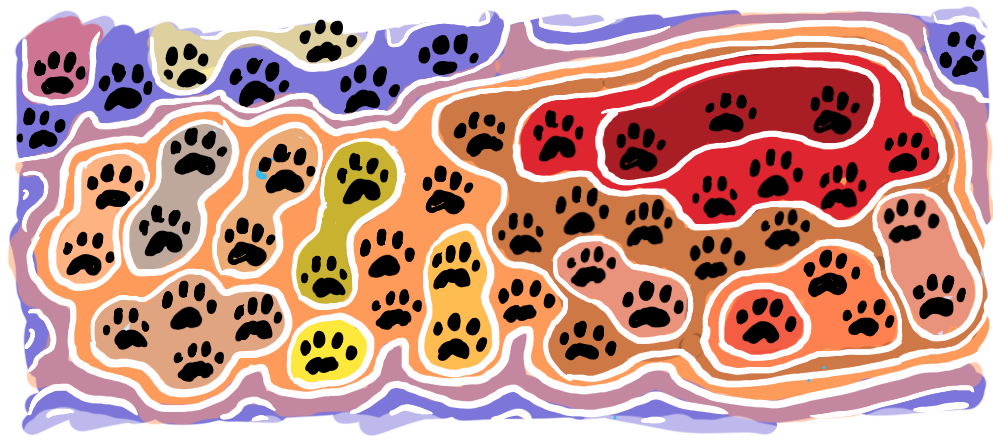
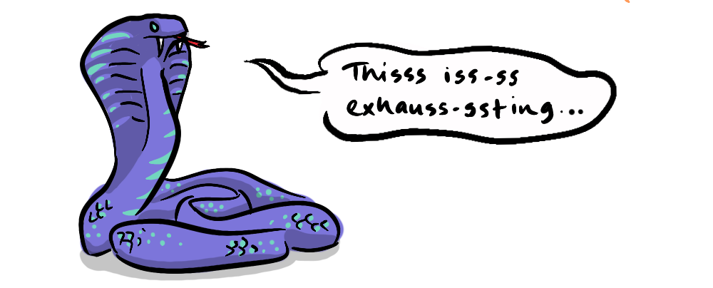
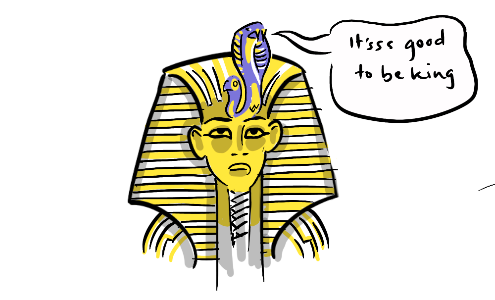

~ why cooperate? part 2 ~
Our moral responses are a special kind of emotional response. In this way we feel when something is good or bad. Morality is thus unique to each and every one of us. While there are cross-cultural correlations for what we feel is good and bad, there are also differences, and indeed there are differences within cultures, between regions, towns, streets, right down to potential fine-grained moral differences between neighbouring houses.
So, is that it for morality? Is it just another kind of, albeit deeply held and emotionally felt, personal preference?
Well, yes, but we tend to have far more in common with those around us than we have differences. This suggests there is a fairly reliable process for the transmission of morality, the transmission of moral-emotional dispositions, and that they remain consistent throughout our lifetimes. We can, in this sense, think of morality as a one-time-programmable module within our minds. We start life highly malleable in this regard, are then influenced by our experience of the world, and the behaviour of those around us, and in this way become inculcated with moral-emotional dispositions. Once set, they are not easily changed, except under the most trying and extreme circumstances. In this way morality is passed down.

So, how does this help our Super-Defector in their need to avoid the instability of morality upheld by continual force?
Seeing the malleability of a child's mind, all the Super-Defector need do is add specific moral training of the young, to their more general program of cooperation enforcement. Once this new generation comes of age, pre-programmed for cooperation, the need for, and cost of, cooperation enforcement falls dramatically. So long as the Super-Defector is able to keep their subjects from the desperate circumstances that might break this moral training, ideally through the productivity benefits of the moral system they inculcate, significant cost-savings and long-term stability will be achieved.
The Super-Defector need not stop there though. The cult of personality offers another layer to our moral training. In addition to being pre-programmed to cooperate, subjects can be pre-programmed to revere their leader, to see them (and their offspring) as, in effect, a different species, deserving of special moral-emotional consideration. One very old tradition in this regard is to claim descent from god, to be part-god, or in the very least to be descended from heaven. We see this most explicitly in the Sumerian King List and the various Egyptian King lists, spanning thousands of years - certainly a commendable level of stability. More lately, as gods and rulers have become differentiated, we still observe the Divine Right of Kings, or its devolved counterpart the Papal Approval. Instead of claiming to be a god, the modern Super-Defector simply claims to have permission from god, or permission from god's representative on Earth.
Of note in the above, with regards to our moral-emotional dispositions, is the appearance of the three key properties of an evolving system:
- reliable replication
- the potential for variety
- some form of selection pressure (based on the productivity achieved by the nature of cooperation inculcated)
In Part 3 we will see how this can lead to our transcendence from the Super-Defector.